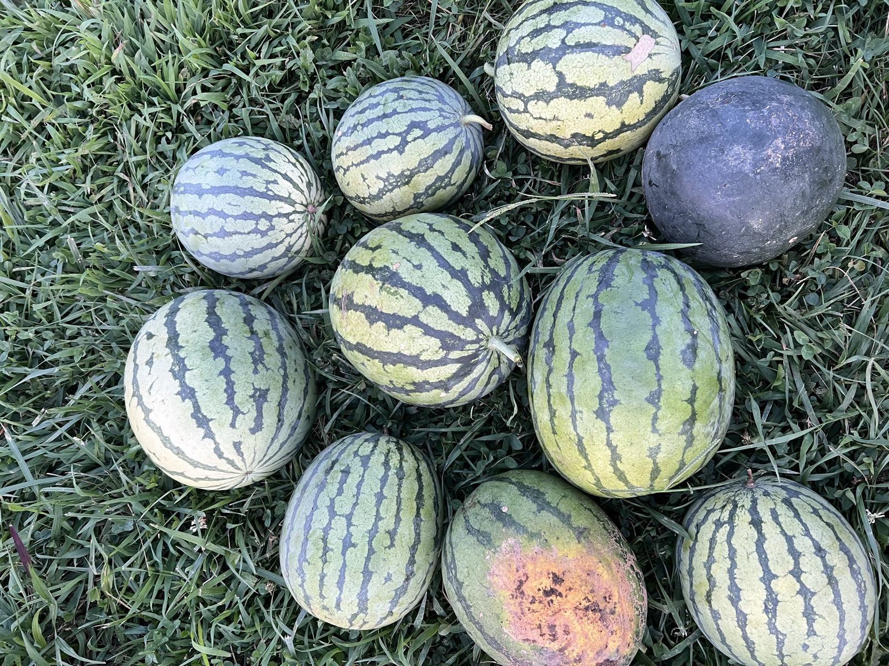
Vegetables, Fruits & Herbs
Organic produce and culinary herbs grown from seed, hand-tended, and never sprayed. Plus a growing list of medicinal herbs — yarrow, echinacea, calendula, chamomile, milk thistle.
Nine acres of regenerative farming in central Virginia — vegetables, fruits, herbs, cut flowers, native plants, and heritage breed chickens. Tended by hand, never sprayed.
Learn more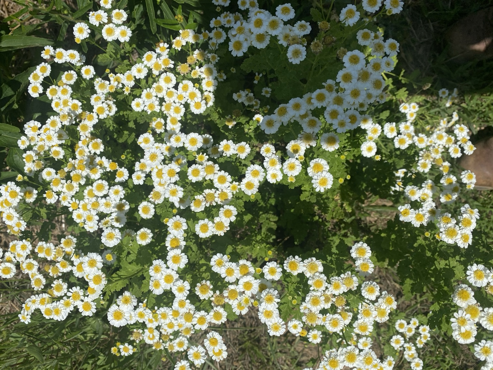
We don't spray anything. Not fungicides, not herbicides, not pesticides, not insecticides. We'd rather lose a crop than put something into the soil, the air, or our food that could harm a pollinator, a neighbor, or the people who eat what we grow.
Everything starts from seed in our greenhouse. Beds are turned by hand with a broadfork — minimal till, maximum life under the surface. We cover crop through the off-season, feed our soil with OMRI-approved organic compost, and rotate our birds across pasture so the land we steward gets healthier every year.
It's slower this way. It's harder. We think it's worth it.
A diversified mix of edible, medicinal, and ornamental crops — alongside heritage breed laying hens raised the way they were meant to live.

Organic produce and culinary herbs grown from seed, hand-tended, and never sprayed. Plus a growing list of medicinal herbs — yarrow, echinacea, calendula, chamomile, milk thistle.
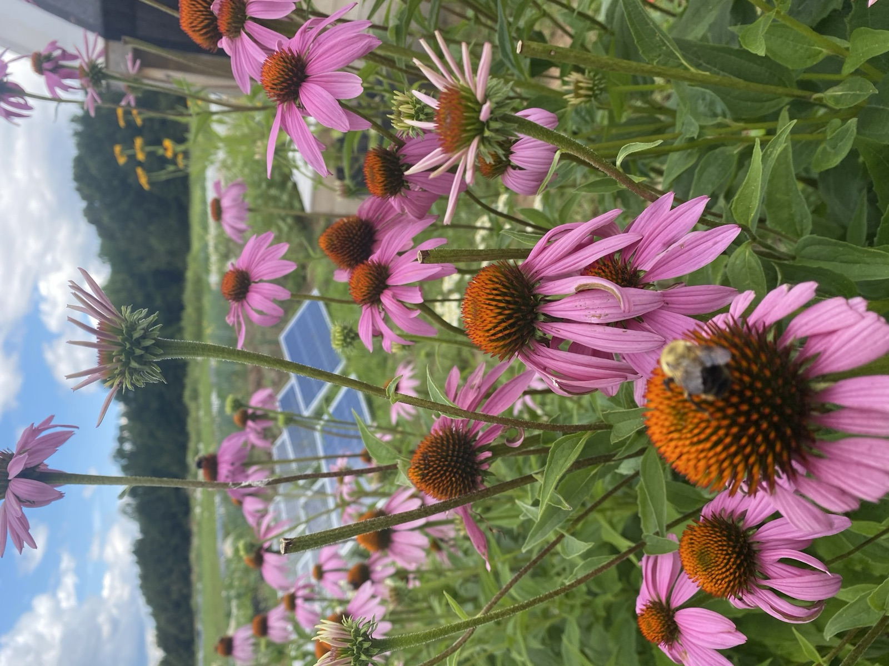
Cut flowers for the table and Virginia natives planted to feed pollinators and rebuild habitat. Coneflowers, yarrow, feverfew, calendula — beauty with a job to do.
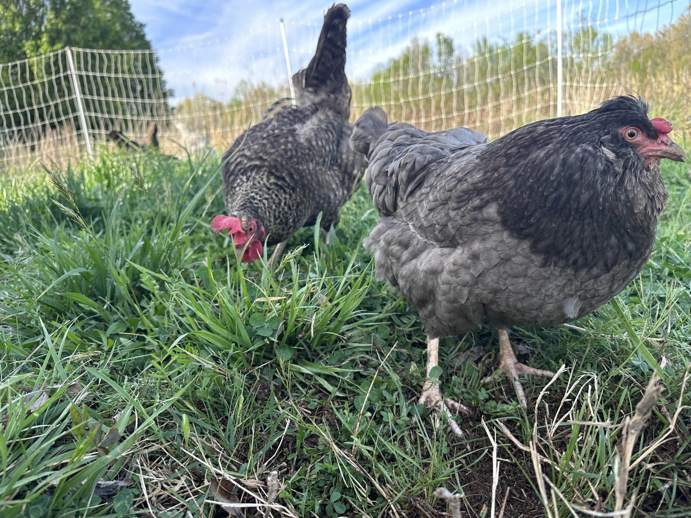
Heritage breed laying hens rotated daily through fresh pasture in our chicken tractor. Organic, corn- and soy-free feed. Eating eggs, hatching eggs, and baby chicks available in season.
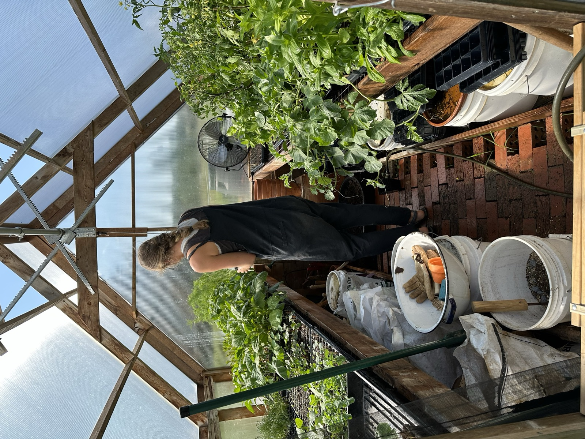
Sheep and goats joining the rotation, meat chickens going on pasture, and shiitake and oyster mushrooms in the woods. The farm grows a little more every year.
Selected harvests, blossoms, and quiet mornings from a working year on nine acres in Goochland.
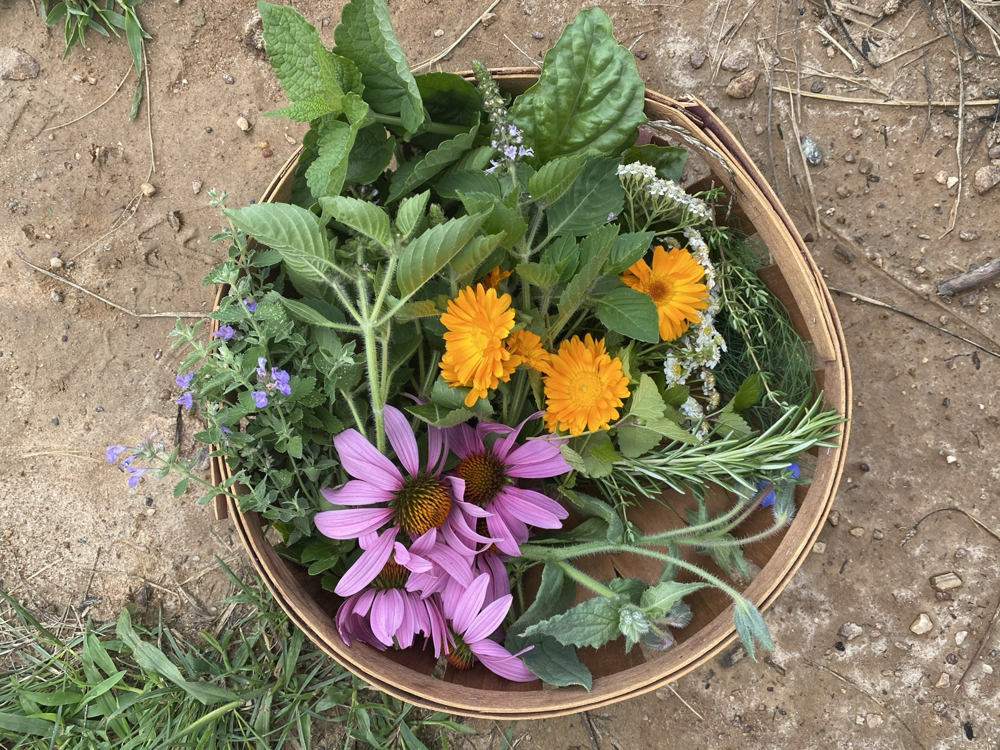
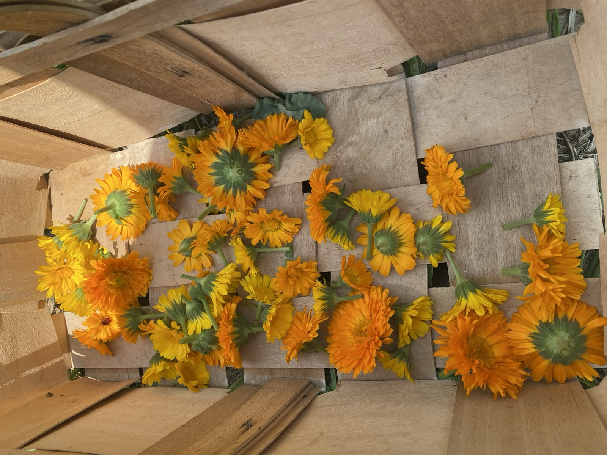
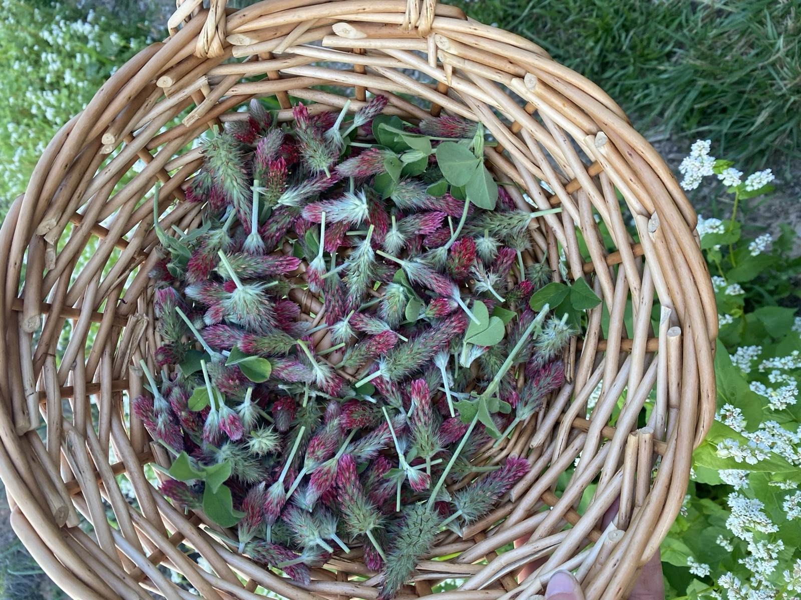
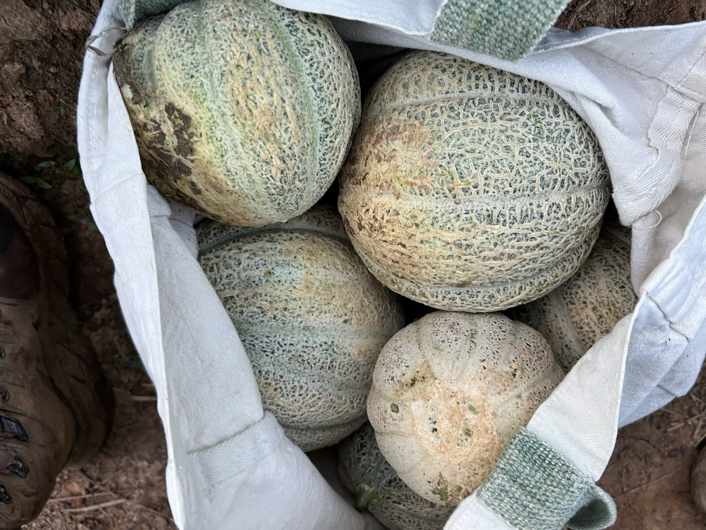
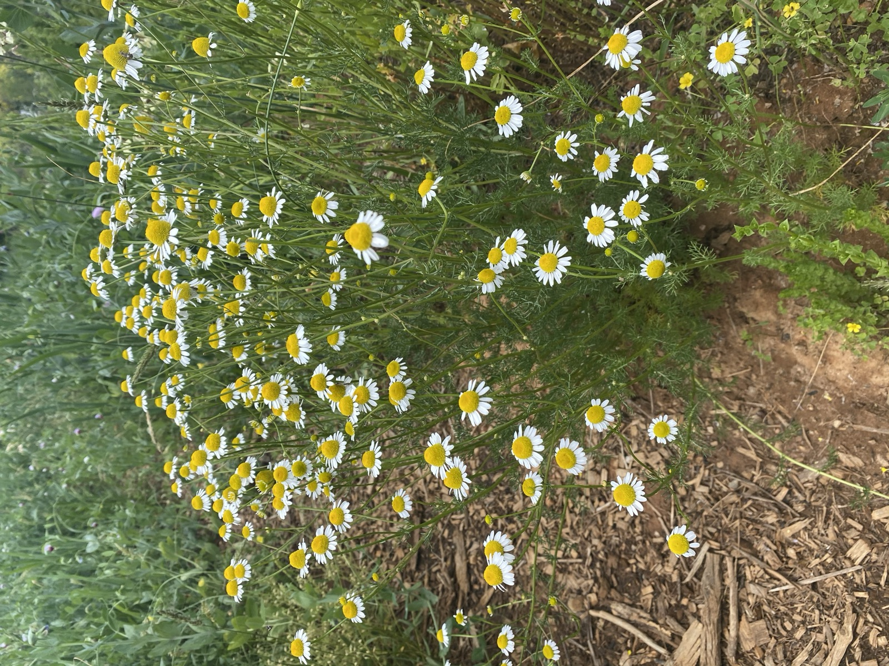
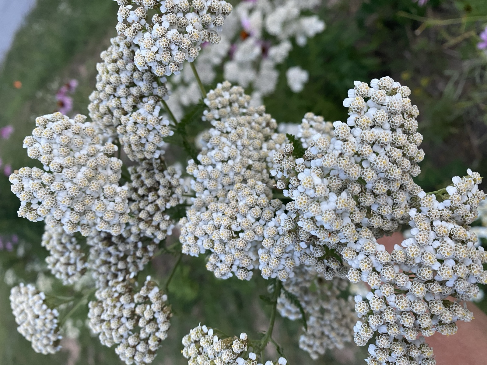
Front Porch Farm & Garden is a small operation. What's available shifts with the season — eggs and produce one week, cut flowers or chicks the next. Reach out and we'll tell you what's at the farm.